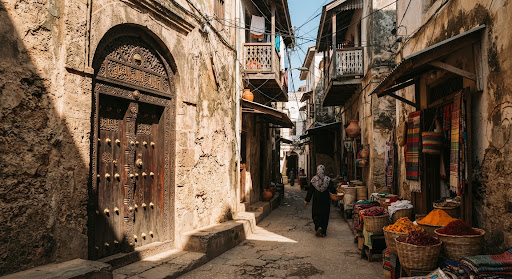
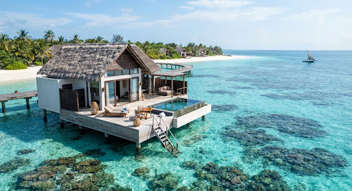
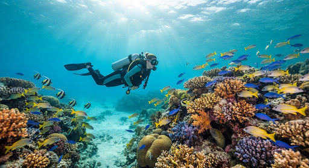
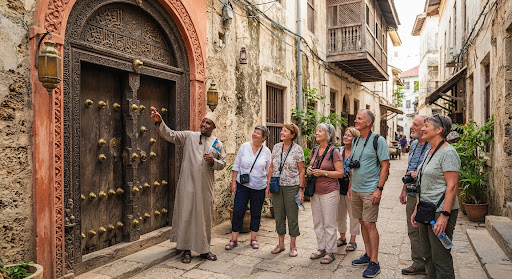
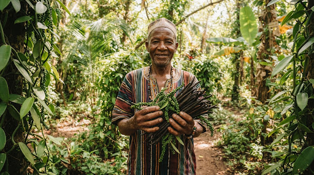
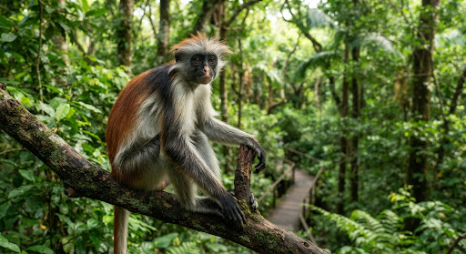

The Spice Isle
Step into the winding, labyrinthine alleys of Stone Town, a UNESCO World Heritage site where the air is thick with the scent of cloves, nutmeg, and cinnamon. This ancient trading hub serves as a living museum of Swahili culture, blending Arab, Indian, Persian, and European influences.
Beyond the coral-stone walls of the city lie the legendary spice plantations. Here, the island’s rich history as the world’s leading producer of cloves comes to life through sensory tours that invite you to touch, smell, and taste the gold of the archipelago.
DISCOVER STONE TOWN
Coastal Sanctuary

Untouched Horizons
From the vibrant coral reefs of Mnemba Atoll to the powdery white sands of Kendwa, the archipelago offers a sanctuary for both the adventurous soul and the seeker of quiet luxury.
Experience Zanzibar

Scuba Diving
Explore the deep azure of the Mnemba Atoll.

Stone Town Tour
A walk through 500 years of Swahili history.

Spice Farm Visit
Taste the true essence of the archipelago.

Jozani Forest
Encounter the endemic Red Colobus monkeys.
BEST TIME TO VISIT
June to October
The cool, dry season offers clear skies and ideal temperatures for both beach lounging and town exploration.
GETTING THERE
Abeid Amani Karume Int. Airport
Direct flights from major hubs or a 20-minute scenic flight from Dar es Salaam.
CULTURAL ETIQUETTE
Modesty & Respect
Zanzibar is a conservative society; please dress modestly in public areas and ask before taking photos of residents.